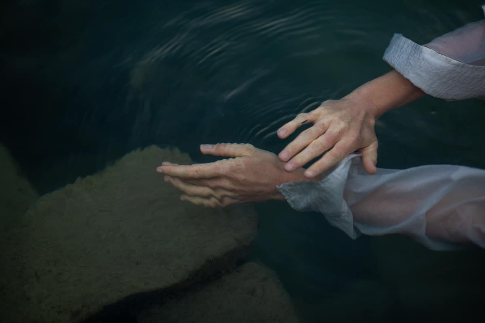
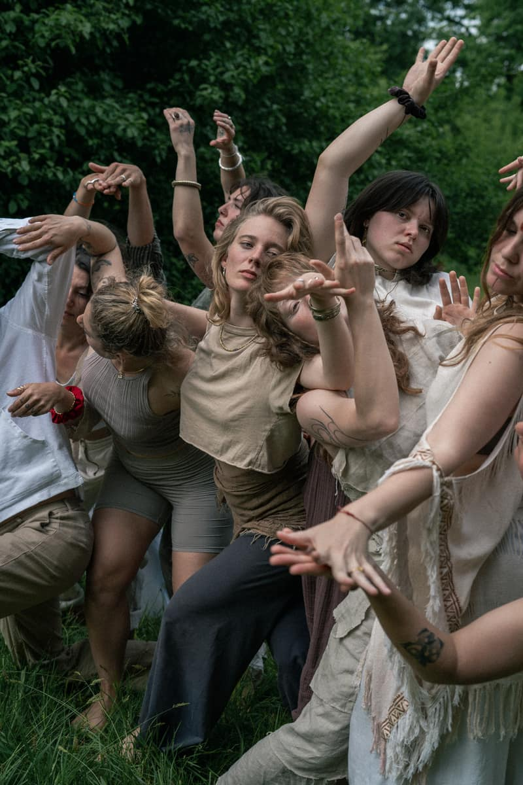
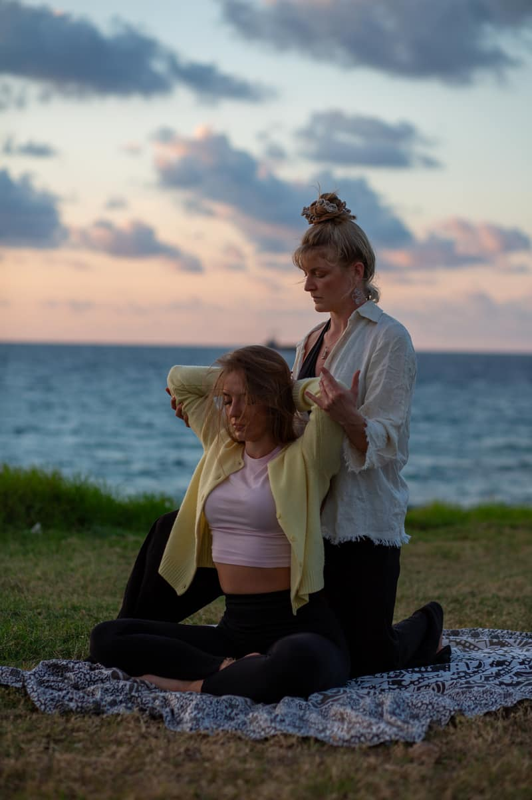
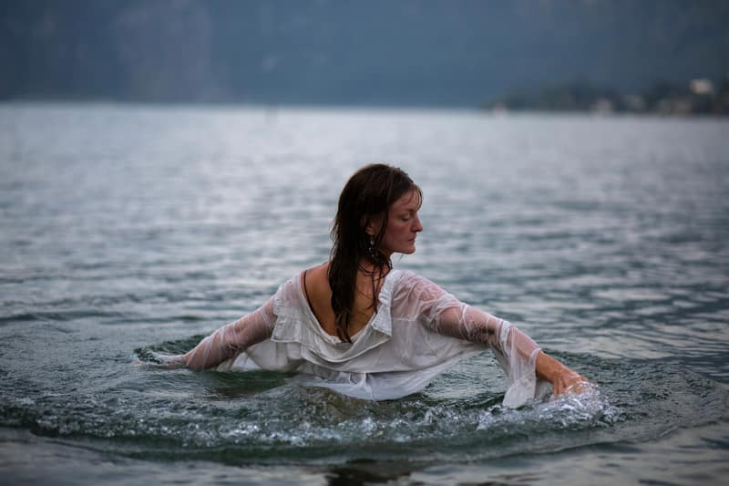

Fluid dance · Embodiment · Lucerne
The art of becoming fluid
Welcome to the place of your authentic expression and fluid dance. Like a quiet current, the water devotion guides you inward — unfolding your own rhythm and the power behind your movement. Finding ease, flow, and more of you.
Are you yearning to surrender to your own fluidity — to explore the waves your body longs to share? The waters are waiting.
More than body awareness, this is about feeling, letting go and allowing yourself to be moved. Unfolding your unique rhythm — and recognizing the power behind your movement.
Let us dive in, gently and deeply.
Offerings
Three ways into the water

The Fluid Self — 1:1 Mentoring
Work with me, tailored to your needs, your rhythm and your desire to surrender to your dance, your body awareness and your inner flow.
Discover the mentoring →
Workshops & Dance Journeys
Feel the presence, the people, and the practice — live in Lucerne. Become part of a community devoted to the waters within.
See the next dates →
ZenThai Shiatsu
A dance with the body. Conscious touch and gentle movement that support your wellbeing — booked one to one, in Lucerne.
Discover the bodywork →
About me
My name is Lucy
Born and raised in Hamburg, now living in Lucerne. Dance has been a deep companion of mine since I was a little child. At 16, I began teaching, and I've been creating joyful, connecting experiences through movement ever since. After years of choreography and performance, my body began to speak through pain in my gut and lungs.
That pain led me to freestyle and fluid movement, to a place where emotions could find authentic expression. Through intensives at humanhood, amenti movemeant and somatic dance, it guided me to create spaces that don't just reflect you in the mirror of a dance studio, but in the mirror of the person in front of you. Through the studies of ZenThai Shiatsu I'm touched by how gently, and sometimes with sharp clarity, the body communicates with us.
I care about how often we're taught to minimize our voices and presence, instead of celebrating them. The Water Devotion is here to shift that. In a soft, artistic and most compassionate way.
Looking forward to flow with you soon. With love. Lucy
„If there is magic on this planet, it is contained in water.“ Loren Eiseley
Voices from the practice
What practitioners feel
„My expression has opened deeply, and I feel much more connected to my body, to myself. For me, this experience went far beyond dancing.“
„This journey has once again reminded me how deep my passion for dance truly is — and how much I want to nurture and expand my practice.“
„Three months of depth, touch, exploring, expanding, integrating and becoming myself. Step by step.“
Stay in the flow
Letters from the water
Now and then a note from me — new dates, journeys, and what the waters are asking for.